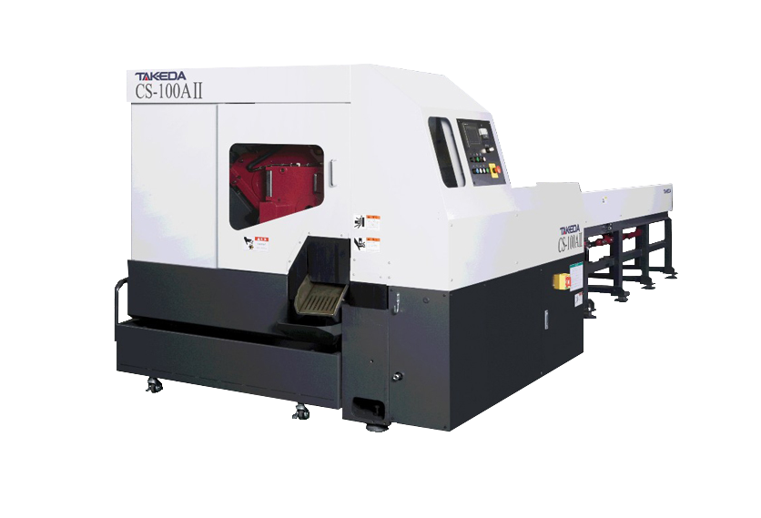
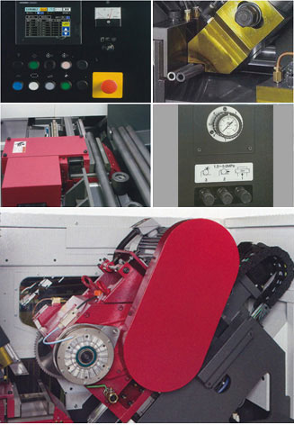

.png)
cs-75/100/150a ii
(takeda 전자동 고속 원형톱기계)



| image | contents |
|---|---|
|  |
|
| 구분 | CS-75A II | CS-100A II | CS-150A II | |||
|---|---|---|---|---|---|---|
| Work | 소재 크기 |
원형 | 1本 | 10 ~ 76.3 mm | 25 ~ 101.6 mm | 75 ~ 152.4 mm |
| 2本 | 10 ~ 35 mm | 25 ~ 45 mm | - | |||
| 사각 | 1本 | 10 ~ 60 mm | 25 ~ 75 mm | 75 ~ 100 mm | ||
| 2本 | 10 ~ 30 mm | 25 ~ 37.5 mm | - | |||
| 최대소재질량 | 216kg (76.3 ~ 6m 1本 상당) |
382kg (101.6 ~ 6m 1本 상당) |
860kg (152.4 ~ 6m 1本 상당) |
|||
| 소재 길이 |
최대 | 6000 mm | 6000 mm | 6000 mm | ||
| 최소 | 1000 mm, 재가공 (제품길이 + 300 mm) |
1000 mm, 재가공 (제품길이 + 300 mm) |
1000 mm, 재가공 (제품길이 + 300 mm) |
|||
| 절단 길이 |
끝단절단길이 | 10 mm 이상 | 10 mm 이상 | 20 mm 이상 | ||
| 잔재길이 | 25 mm 이상 | 30 mm 이상 | 40 mm 이상 | |||
| 제품길이 | 10 mm 이상 | 10 mm 이상 | 10 mm 이상 | |||
| Circular saw |
톱날종류 | 초경날 (285mm * 32mm * t2.0mm) |
초경날 (360mm * 50mm * t2.6mm) |
초경날 (460mm * 50mm * t2.7mm) |
||
| 하이스날 | 하이스날 | 하이스날 | ||||
| 톱날 외경 |
최대 | 305 mm | 380 mm | 480 mm | ||
| 최소 | 285 mm | 360 mm | 460 mm | |||
| 톱날두께 | 1.5 ~ 2.5 mm | 2.0 ~ 3.0 mm | 2.0 ~ 3.0 mm | |||
| 날 개수 |
초경날 | 60 ~ 140 (톱날사이즈에 따라 다름) |
60 ~ 160 (톱날사이즈에 따라 다름) |
40 ~ 100 (톱날사이즈에 따라 다름) |
||
| 하이스날 | 100 ~ 300 (톱날사이즈에 따라 다름) |
100 ~ 300 (톱날사이즈에 따라 다름) |
100 ~ 300 (톱날사이즈에 따라 다름) |
|||
| Cutting | 절단 조건 |
주회전속도 | 45 ~ 176m minx 톱날지름 285mm |
60 ~ 235m minx 톱날지름 360mm |
57 ~ 216m minx 톱날지름 460mm |
|
| 회전속도 | 50 ~ 197 min-1 | 53 ~ 208 min-1 | 39 ~ 149 min-1 | |||
| 전달속도 | 0 ~ 30 mm/sec | 0 ~ 30 mm/sec | 0 ~ 30 mm/sec | |||
| 톱날흔들림방지장치 | 2개 (3개) | 2개 (3개) | 2개 (3개) | |||
| 톱날이동유 유효 스트로크 |
125 mm | 150 mm | 175 mm | |||
| 구동방식 | AC서보모터 + 볼스크류 | AC서보모터 + 볼스크류 | AC서보모터 + 볼스크류 | |||
| 절단방식 | 45도 대각선 슬라이드 절단 | 45도 대각선 슬라이드 절단 | 45도 대각선 슬라이드 절단 | |||
| 톱날브레이크 | 파우더클러치식 | 파우더클러치식 | 파우더클러치식 | |||
| 바이 스압 |
가로 | 9.6 KN (작업에 따라 압력조절 가능) |
9.6 KN (작업에 따라 압력조절 가능) |
15.9 KN (작업에 따라 압력조절 가능) |
||
| 세로 | 3.9 KN (작업에 따라 압력조절 가능) |
3.9 KN (작업에 따라 압력조절 가능) |
6.2 KN (작업에 따라 압력조절 가능) |
|||
| Sizing Glipper |
구동방법 | 볼스크류 + AC서보모터 | 볼스크류 + AC서보모터 | 볼스크류 + AC서보모터 | ||
| 유효 스트로크 | 705mm + 최종스트로크10mm | 705mm + 최종스트로크10mm | 705mm + 최종스트로크10mm | |||
| 반응위치결정속도 | 30 m/min | 30 m/min | 20 m/min | |||
| 최소위치결정 측정방법 |
0.01 mm | 0.01 mm | 0.01 mm | |||
| 그립위치 | 전체폭 | 전체폭 | 전체폭 | |||
| 그립압 | 4.3KN | 4.3KN | 4.3KN | |||
| 흠집방지시스템 | Floating 방식 | Floating 방식 | Floating 방식 | |||
| Cutting Fluid |
방식 | 미스트방식 | 미스트방식 | 미스트방식 | ||
| 용량 | 1.8 L | 1.8 L | 1.8 L | |||
| Driving Motor |
톱날구동모터용량 | 75KW * 4P | 11KW * 4P | 11KW * 6P | ||
| 톱날이동모터용량 | 1.2KW AC서보모터 | 2.0KW AC서보모터 | 2.0KW AC서보모터 | |||
| 측정구동모터용량 | 0.8KW AC서보모터 | 0.8KW AC서보모터 | 0.5KW AC서보모터 | |||
| 유압용모터용량 | 1.5 KW | 1.5 KW | 1.5 KW | |||
| Hydraulic drive system |
용량 | 20 L | 20 L | 20 L | ||
| 설정압력 | 50 Mpa | 5.0 Mpa | 5.0 Mpa | |||
| Air | 설정압력 | 0.5 Mpa | 0.5 Mpa | 0.5 Mpa | ||
| Machine | Size(mm) (폭 * 넓이 * 높이) |
2075 * 1825 * 1580 | 2122 * 2015 * 1790 | 2268 * 2125 * 1880 | ||
| 무게 | 2000kg | 2400kg | 3000kg | |||
| video |
|---|
top